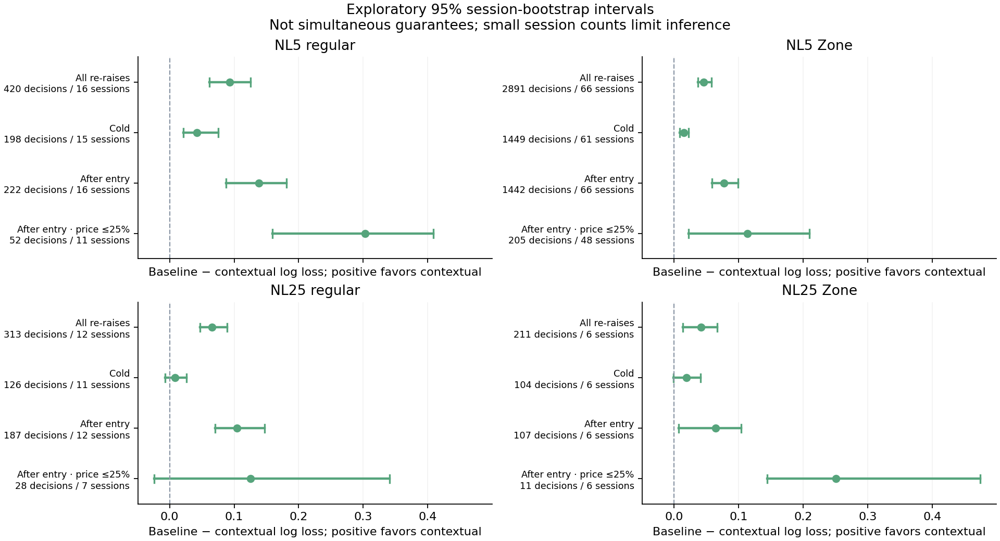
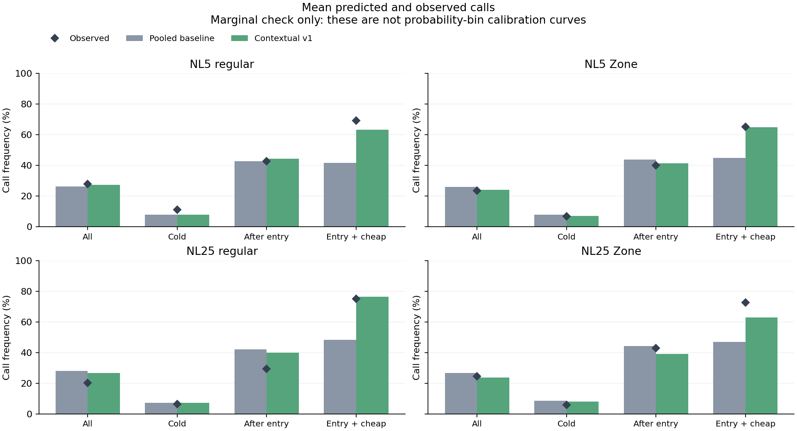
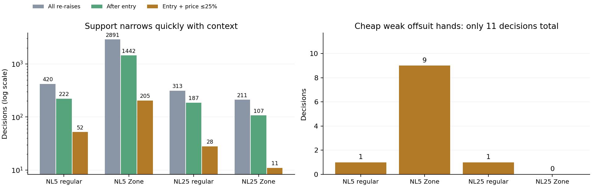

Overall log loss and Brier improve in all four groups. Regular and Zone tables are kept separate. These are offline cross-domain diagnostics; no fitting or model promotion occurred.
Source blinds are 0.4/1 bb; the app's Contextual v1 guard still requires 0.5/1. These results are not a fresh NL10 holdout. The narrow cheap weak-hand slice contains only 11 decisions in total.
Full method and limitations · Frozen protocol · Aggregate evaluation · Research progress



Regular NL25 still overpredicts calls. Improved average prediction loss does not mean every hand/context probability is calibrated or that poker EV improved.